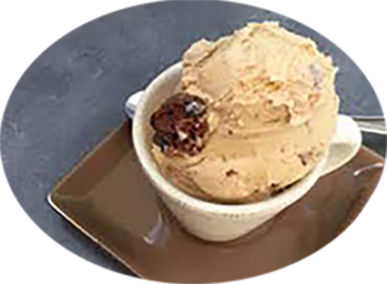

Crème glacée sans sorbetière

Pour 8 personnes
Préparation : 20 mn
Repos 4h
Ingrédients pour environ 1 litre de glace :
- 150 g de sucre
- 6 à 8 jaunes d'oeufs
- 75 cl de lait
- 2 gousses de vanille ou extrait
- parfum au choix
Recette
- Faire bouillir le lait avec l'arôme choisi (pour de la vanille, fendre les gousses en deux et les faire infuser avec le lait,
- Pour du chocolat,mettre 100 g de chocolat noir fondu ou en poudre dans le lait,
- Pour des fruits, ajouter la purée de fruit lorsque la crème est froide,
- Pour les fruits secs, ajouter le fruit réduit en poudre ou des extraits).
- Pendant que le lait chauffe, battre les oeufs avec le sucre dans un saladier.
- Quand le lait est prêt, verser le lait chaud sur les jaunes en fouettant et remettre à chauffer la crème jusqu'à son épaississement. La crème est bonne quand il n'y a plus de mousse en surface.
- La crème ne doit pas bouillir afin de ne pas cuire les oeufs. Puis la verser dans un autre récipient pour arrêter la cuisson.
- Placer la préparation au congélateur puis lorsqu'elle commence à prendre (au bout de 20 minutes), la sortir et la mixer.
- La replacer au congelateur et répéter cette étapes au minimum 3 fois. Plus cette opération est répétée, plus onctueuse est la glace.
|